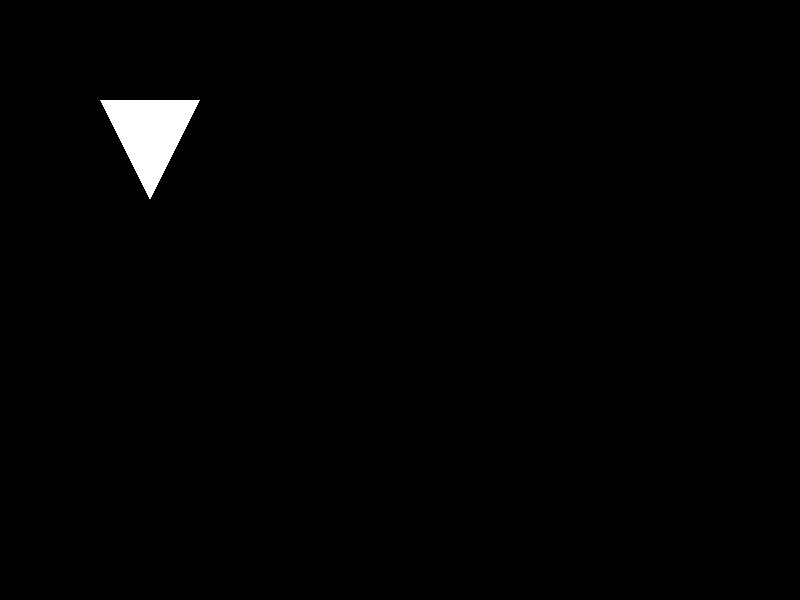
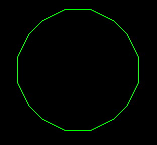

love.graphics.polygon
From LOVE
| Available since LÖVE 0.4.0 |
| This function is not supported in earlier versions. |
Draws a polygon.
Following the mode argument, this function can accept multiple numeric arguments or a single table of numeric arguments. In either case the arguments are interpreted as alternating x and y coordinates of the polygon's vertices.

|
When in fill mode, the polygon must be convex and simple or rendering artifacts may occur. love.math.triangulate and love.math.isConvex can be used in 0.9.0+. |
Function
Synopsis
love.graphics.polygon( mode, ... )
Arguments
Returns
Nothing.
Function
Synopsis
love.graphics.polygon( mode, vertices )
Arguments
Returns
Nothing.
Notes
Available since LÖVE 12.0
Filled shapes provide texture coordinates to shaders.
Examples
Two ways of drawing the same triangle


This example shows how to give the coordinates explicitly and how to pass a table argument.
-- Giving the coordinates directly.
love.graphics.polygon("fill", 100,100, 200,100, 150,200)
-- Defining a table with the coordinates.
-- This table could be built incrementally too.
local vertices = {100,100, 200,100, 150,200}
-- Passing the table to the function as a second argument.
love.graphics.polygon("fill", vertices)
Draw concave polygon
local vertices = {100,100, 200,100, 200,200, 300,200, 300,300, 100,300} -- Concave "L" shape.
local triangles = love.math.triangulate(vertices)
for i, triangle in ipairs(triangles) do
love.graphics.polygon("fill", triangle)
end
Draw rotated rectangle
This is one way to draw a rotated rectangle.
function drawRotatedRectangle(mode, x, y, width, height, angle)
local cosa, sina = math.cos(angle), math.sin(angle)
local dx1, dy1 = width*cosa, width*sina
local dx2, dy2 = -height*sina, height*cosa
local px1, py1 = x, y
local px2, py2 = x+dx1, y+dy1
local px3, py3 = x+dx1+dx2, y+dy1+dy2
local px4, py4 = x+dx2, y+dy2
love.graphics.polygon(mode, px1,py1, px2,py2, px3,py3, px4,py4)
end
Draw rotated boid (directed triangle)

function drawBoid (mode, x, y, length, width , angle) -- position, length, width and angle
love.graphics.push()
love.graphics.translate(x, y)
love.graphics.rotate( angle )
love.graphics.polygon(mode, -length/2, -width /2, -length/2, width /2, length/2, 0)
love.graphics.pop()
end
x, y, angle = 200, 100, math.pi/4
drawBoid ("fill", x, y, 20, 10 , angle)
Pixel-perfect Hexadecagon


For better result it can be used with "rough" line style and "nearest" canvas filter.
function hexadecagon (mode, x, y, radius) -- same as love.graphics.circle
local w1 = math.atan(2/5) -- ratio of two integers, 21.8 degrees
local w2 = math.atan(5/5) -- ratio of two integers, 45 degrees
local k1 = (w1+w2)/2
local k2 = math.cos((w2-w1)/2)
local a = radius
local b = radius*math.tan (w1 / 2)
local c = radius*math.cos (k1) / k2
local d = radius*math.sin (k1) / k2
local vertices = {
a, b, c, d, d, c, b, a,
-b, a, -d, c, -c, d, -a, b,
-a,-b, -c,-d, -d,-c, -b,-a,
b,-a, d,-c, c,-d, a,-b}
love.graphics.translate (x+0.5, y+0.5)
love.graphics.polygon (mode, vertices)
love.graphics.translate (-x-0.5, -y-0.5)
end
canvas = love.graphics.newCanvas(width, height)
canvas:setFilter("nearest", "nearest")
love.graphics.setLineStyle("rough")
love.graphics.setCanvas (canvas)
love.graphics.setColor (0,1,0)
hexadecagon ("line", 200, 100, 60)
love.graphics.setCanvas ()
function love.draw()
love.graphics.setColor (1,1,1)
love.graphics.draw (canvas)
end
See Also
Other Languages
English
More info
Categories: